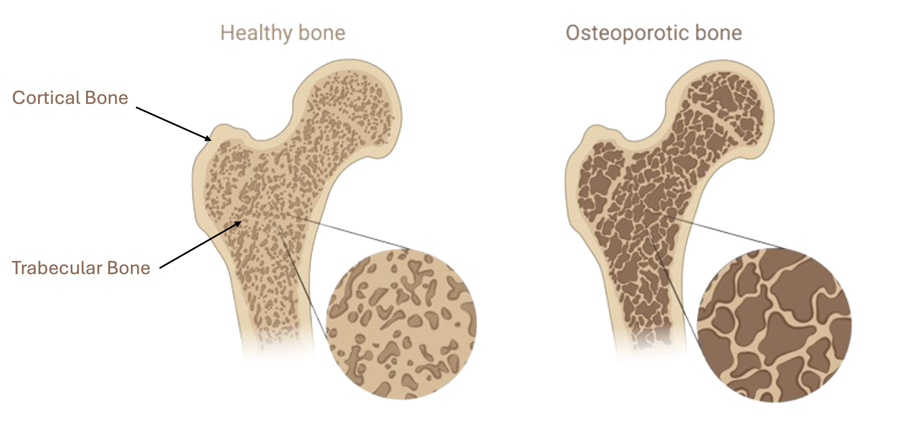
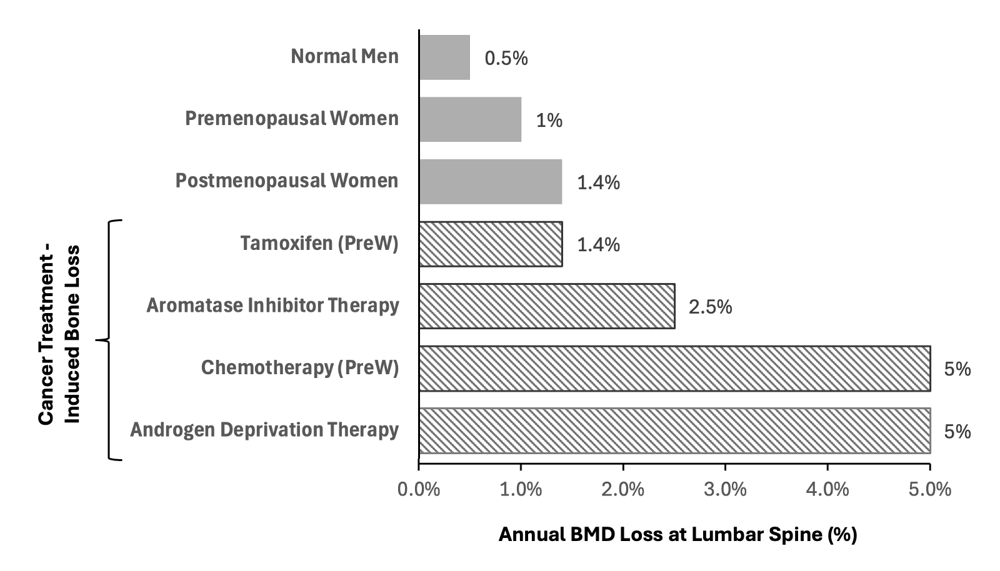

Learn about how chemotherapy and other cancer treatments can lead to osteoporosis.
Annual Cost of Osteoporosis Fracture Treatment (EU):
€0
Annual Number of Osteoporosis Fractures (Worldwide):
0
Top Tip!
Look out for bold words on this page!
If you hover over them, you'll see useful definitions to help you understand key concepts.
What is Oncology Treatment-Induced Osteoporosis?
Cancer treatments save lives, but they can also come with unintended challenges, like osteoporosis.
A condition that weakens bones, making them more likely to break.
Oncology treatment induced osteoporosis (OTIO) occurs when cancer treatments, such as chemotherapy
A cancer treatment using drugs to kill cancer cells., hormonal therapy
A cancer treatment that blocks or lowers hormones like oestrogen or testosterone., and radiotherapy
A cancer treatment using radiation to kill or damage cancer cells., negatively impact bone health, leading to a condition called osteoporosis.
How does OTIO Affect the Bones?
Healthy bones have a thick cortical bone
Layer of dense bone forming the outer shell. layer and a strong trabecular bone
Layer of mesh bone forming the inner compartment. layer filled with collagen
A protein that adds structure to bone. and other minerals. The inside looks like honeycomb, with blood vessels and bone marrow within the spaces. Osteoporosis causes these layers to become thin, leading to weaker, more fragile bones with a higher chance of breaking, which can make life much harder for patients.
This condition occurs when there's an imbalance in the natural bone remodelling process
The process where bones rebuild themselves., causing osteoclasts
Bone cells that break down old or damaged bone. to work harder than osteoblasts
Bone cells that build new bone., leading to more breakdown of bone.
How does it happen?
Cancer treatments target rapidly dividing cells to stop the growth and spread of tumours, but they can also interfere with bone health:
Chemotherapy - Can affect bone-forming and bone-removing cells, leading to bone loss. It may also affect the hormones that help maintain healthy bones.
Hormone therapy – Can reduce levels of hormones (oestrogen and testosterone) that are important to maintain strong, healthy bones.
Radiotherapy – Targeting cancer near bones can directly weaken the bones and increase the risk of fractures.
Who is at risk?
Not all cancer patients will develop osteoporosis, but certain factors increase the risk, including:
Age: older adults naturally experience some bone loss, making them more vulnerable.
Gender: women, especially postmenopausal women, are at higher risk due to lower oestrogen levels.
Type of cancer: Breast and prostate cancers, often treated with hormone therapies, have a stronger link to osteoporosis.
An illustration showing the imbalance of bone cells in osteoporotic bones compared to healthy bones.

An illustration showing the inside of a healthy bone compared to a bone affected by osteoporosis.
How Do Our Bones Rebuild Themselves?
Insights From OTIO Research
Researchers are working hard to uncover ways to predict, prevent, and treat osteoporosis caused by cancer treatments. The first step in combating OTIO is understanding how cancer treatments impact bone health at a cellular level. A lot of research has already told us how this happens, for instance:
A 2015 study explains how some cancer treatments like chemotherapy
A cancer treatment using drugs to kill cancer cells., hormonal therapy
A cancer treatment that blocks or lowers hormones like oestrogen or testosterone., and radiotherapy
A cancer treatment using radiation to kill or damage cancer cells., can weaken bones by affecting how they grow and repair themselves, leading to osteoporosis. For example, chemotherapy can harm the cells that build new bone, while hormonal therapy can lower important hormones, such as oestrogen and testosterone, that help keep bones strong.
Short-Term Benefits of OTIO Research
Ongoing research into OTIO directly benefits cancer patients. By understanding how cancer treatments affect bone health, we can:
Reduce fractures, pain, and complications during recovery.
This way, doctors can better manage the risk of fractures and pain associated with OTIO. But this research doesn't just improve patient outcomes, it also helps healthcare providers deliver better care by addressing the bone health of cancer patients alongside their treatment.
Long-Term Benefits of OTIO Research
In the long run, OTIO research has the potential to improve healthcare policies by helping policymakers prioritise osteoporosis prevention and encourages the incorporation of bone management as a standard part of cancer treatment guidelines. By raising awareness, we can prioritise early detection, prevention, and improved treatment plans for these patients, improving their overall quality of life.
Pie chart showing that 66% of women at risk of osteoporosis (OP) in the UK miss out on life-changing therapy due to late diagnosis and low public awareness.

Bar chart showing the percentage loss of bone mineral density
The measure of the amount of minerals (like calcium) in your bones - shows how strong and dense your bones are. (BMD) at the lumbar spine
Lower section of the spine. each year. (PreW - Premenopausal Women).
Why is it important to learn about?
OTIO is an increasingly important problem that affects cancer patients, healthcare systems, and society as a whole. By 2034, the population of people aged over 75 years in the UK is expected to increase to 42% in men and 31% in women. With an increasingly aging population comes a larger population living with osteoporosis, and the amount of osteoporotic fractures every year is assumed to increase in the UK (from 138,000 in 2019 to 665,000 in 2034).
Impact on Cancer Patients
Some cancer treatments lead to weakened bones, putting patients at risk of:
Fractures
Pain
Loss of independence
These complications can make it much harder for patients to recover from cancer and carry out everyday activities, significantly reducing their quality of life.
Impact on Healthcare Systems
Osteoporotic fractures
Fractures that happen because of osteoporosis. place heavy pressure on healthcare systems, leading to billions of euros spent each year on treatment, recovery, and long-term care. This burden is expected to rise as more patients are surviving cancer, resulting in a growing population at risk of OTIO and living with this condition. Therefore, increasing awareness in society and among clinicians is vital.
Fact: In Europe alone, the cost of osteoporosis-related fractures is over €37 billion each year!
Future Directions in OTIO Research
Improving Diagnosis
Identifying patients at risk of osteoporosis early can prevent severe complications and allows clinicians to intervene sooner, reducing the risk of fractures and improving patient outcomes.
Recent research has explored the development of biomarkers
Molecules that can be measured to detect changes in the body. that can detect changes in bone metabolism early. A 2020 study explored the use of bone regulatory markers
Substances that give information about bone health. to predict bone loss and fracture risks in breast cancer patients undergoing Aromatase Inhibitor
A type of hormone therapy. therapy.
Additionally, finding improved diagnostic tools to predict fracture risk and osteoporosis development in cancer patients is critical. Promising advances include diagnostic tools similar to DXA scans
Special x-ray tests that measure how dense bone is. and the FRAX tool
Tool that estimates risk of fractures. that can be administered for cancer patients.
Improving Treatments
Exploring therapies like drugs that stimulate bone growth and new bone-protecting agents that don't interfere with cancer care is critical. For example, clinical trials, like the Z-FAST trial, have proven bisphosphonates
Drugs that treat and prevent osteoporosis. to be an effective treatment to increase BMD in cancer patients. However, only one 2020 study has confirmed a reduction of fractures following the treatment, therefore further investigation into effective treatments is beneficial.
Continued exploration in these areas is essential to ensure that bone health in cancer patients is a priority and that they not only survive their illness but also recover in the long term with healthier bones and fewer complications.
Quiz!
Find Out More!
If you want to learn more, check out these websites: